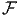
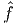
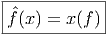

6.1 Remarques philosophico-mathématiques sur les espaces non
commutatifs
Lorsqu’on se donne un “espace” M (techniquement, un ensemble dont
les éléments sont surnommés “points”), on sait construire l’algèbre
des fonctions sur M à valeurs réelles ou complexes. Cette algèbre
est commutative puisque multiplication et addition sont définies
ponctuellement comme suit : (fg)[x] = f[x]g[x] = g[x]f[x] = (gf)[x] et
(f + g)[x] = f[x] + g[x] = g[x] + f[x] = (g + f)[x]. Lorsque notre espace M est
équipé d’une structure topologique, on sait construire l’algèbre C0(M) des
fonctions continues et lorsque M est équipé d’une structure différentiable, on sait
construire l’algèbre C∞(M) des fonctions différentiables.
Il est possible de complètement inverser cette démarche : en d’autres termes,
il est possible de partir d’une algèbre  commutative, abstraitement définie, et de
fabriquer une espace M, tel que s’identifie avec l’algèbre des fonctions sur M.
Nous allons maintenant préciser cette construction.
commutative, abstraitement définie, et de
fabriquer une espace M, tel que s’identifie avec l’algèbre des fonctions sur M.
Nous allons maintenant préciser cette construction.
On se donne une algèbre de Banach, c’est à dire une algèbre associative sur
lC, munie d’une norme || qui soit telle que ||fg||≤||f||||g|| et telle que l’espace
vectoriel sous-jacent soit un espace de Banach (un espace vectoriel normé
complet).
On appelle caractère de tout homomorphisme non nul de vers le corps
lC des complexes. L’ensemble des caractères M s’appelle le spectre de
.
On suppose maintenant l’algèbre commutative. On appelle transformation
de Gelfand l’application  de dans l’algèbre commutative C0(M) qui
à f ∈ associe  ∈ C0(M), défini, pour tout caractère x ∈ M de
par

Résultat (sans démonstration) : est un homomorphisme d’algèbre de
Banach commutative.
Encore quelques définitions :
Une algèbre de Banach involutive est une algèbre de Banach munie d’une
étoile c’est à dire une involution (f** = f), anti-linéaire (λf)* = λf* (pour λ ∈ lC)
et anti-multiplicative ((fg)* = g*f*), telle que l’étoile soit isométrique
||f*|| = ||f||.
Une C - étoile algèbre, est une algèbre de Banach involutive telle que, ∀f ∈
||f*f|| = ||f*||||f|| = ||f||2
Théorème de Gelfand (sans démonstration) : Lorsque est une C-étoile
algèbre commutative, la transformation de Gelfand entre et l’algèbre C0(M)
des fonctions continues sur le spectre de est un isomorphisme.
En fait, on peut préciser davantage : lorsque est une C-étoile algèbre
commutative unitale (c’est à dire avec unité), l’espace M est compact. D’une
certaine façon, rajouter une unité à une algèbre qui n’en a pas revient à
compactifier (via Alexandrov) son spectre.
Ce qui ressort de cette discussion, c’est le fait que s’intéresser à un espace (un
ensemble de points) ou s’intéresser à une algèbre commutative sont deux activités
grosso modo essentiellement équivalentes. En langage savant, on dit que la
transformation de Gelfand permet de définir un foncteur réalisant une
équivalence entre la catégorie des espaces topologiques (compacts) et celle des lC*
algèbres commutatives (unitales).
Une algèbre non commutative ne peut pas être considérée comme une algèbre
de fonctions (à valeurs réelles ou complexes) sur un espace, puisque l’algèbre
serait alors commutative. La “géométrie non commutative”, au sens le
plus large du terme, consiste souvent à re-écrire les diverses propriétés
géométriques des “espaces” dans le langage des algèbres commutatives, c’est à
dire sans utiliser la notion de point, puis à effacer, partout où cela est
possible, le mot “‘commutatif”. Ce faisant, on invente alors une nouvelle
géométrie, celle des algèbres non commutatives. Les espaces non commutatifs
n’existent donc pas, mais les algèbres qui les définissent, elles, existent bel et
bien.
Du point de vue de la physique, il est pratique (et d’usage courant !) de
décrire notre environnement à l’aide de points (pensez à la tête du voyageur à qui
on dirait “Voyez-vous ce caractère de la C-étoile algèbre C0(S2) ?” au lieu de
“Voyez-vous ce point à la surface de la Terre ?”). Cela dit, les deux points de vue
sont équivalents, et on passe d’un point de vue à l’autre à l’aide de la superbe
formule  (x) = x(f) sur laquelle il est bon de méditer…A ce sujet, nous invitons le
lecteur à relire le paragraphe de l’Introduction intitulé “Du classique au
quantique”.
(x) = x(f) sur laquelle il est bon de méditer…A ce sujet, nous invitons le
lecteur à relire le paragraphe de l’Introduction intitulé “Du classique au
quantique”.